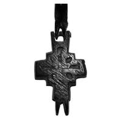

Catalog › CE-0492 · OST2014-3-4
Valvă de encolpion, Starata Reazani, рис. 3, 4
a doua jumătate a sec. XII–sec. XIII (1151–1300) · Starata Reazani, Gorodișcele de Sud (partea de vest), regiunea Reazan, Rusia
single valve of a reliquary cross, altul; a doua jumătate a c. XII–sec. XIII (1151–1300); found at Starata Reazani, Gorodișcele de Sud (partea de vest), regiunea Reazan, Rusia.


Identificare
- Categorie
- Valvă izolată
- Material
- Altul
Iconografie
- Descriere revers
- Cruce.
Datare și atribuire
- Datare
- a doua jumătate a sec. XII–sec. XIII (1151–1300)
- Tipologie
- Korzuhina–Peskova 2003, tip IV.6.4
Descoperire
- Localitate
- Starata Reazani, Gorodișcele de Sud (partea de vest)
- Regiune
- regiunea Reazan
- Țară
- Rusia
- Context
- Așezare
- Coordonate
- 54.3187° N, 40.4593° E
- Precizia locului
- Doar localitatea
Păstrare și referințe
- Bibliografie
- А. А. Остапенко, Кресты-энколпионы из Старой Рязани, în „Древняя Русь. Вопросы медиевистики”, 2014, nr. 1, p. 97–106 [Остапенко 2014], p. 98, рис. 3, 4 (p. 103).
- Figura
- рис. 3, 4
- Planșe
- Остапенко 2014, p. 103
- Observații
- Aliaj de cupru, după legenda figurii. Provine din colecțiile Comisiei științifice arhivistice din Reazan, 1888–1899. Tipul IV.6.4 (cruce pe ambele fețe) apare în a doua jumătate a sec. XII (după autor). Datare: legenda figurii. Coordonate: ale localității (aproximative), nu date în sursă.
Citare: Corpus Encolpiorum, CE-0492, Valvă de encolpion, Starata Reazani, рис. 3, 4, --root/piese/OST2014-3-4/ (accesat 2026-10-20).